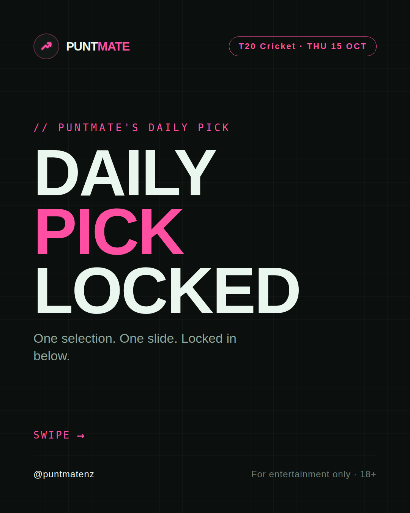
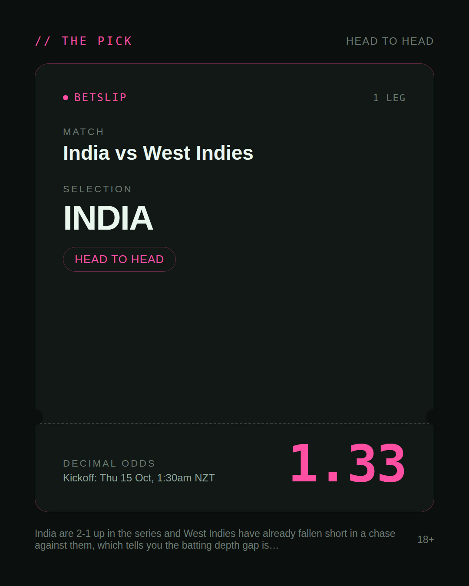
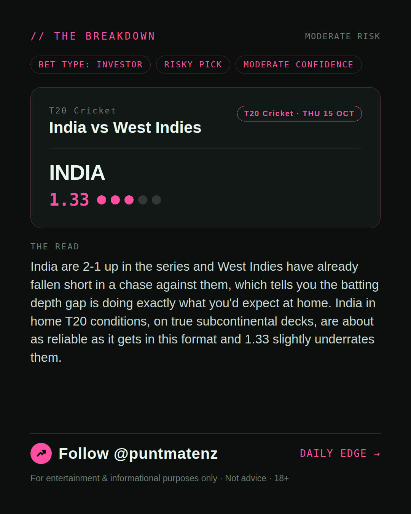
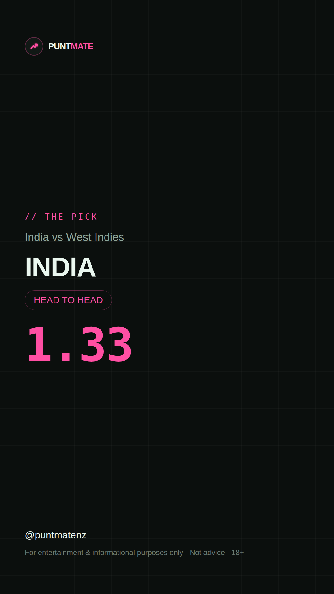

*🎯 PUNTMATE NZ — T20 Cricket* 🏟 India vs West Indies *PICK:* INDIA *ODDS:* 1.33 (Head to Head) *BET TYPE: INVESTOR* _India are 2-1 up in the series and West Indies have already fallen short in a chase against them, which tells you the batting depth gap is doing exactly what you'd expect at home. India in home T20 conditions, on true subcontinental decks, are about as reliable as it gets in this format and 1.33 slightly underrates them._ ────────────────── 📲 Join Telegram for daily picks ⚠️ For entertainment & informational purposes only. Not advice. 18+.
🎯 T20 Cricket — India vs West Indies INDIA @ 1.33 (Head to Head) BET TYPE: INVESTOR This one's about as close to a sure thing as sport gets — the numbers stack up and the price still pays. India are 2-1 up in the series and West Indies have already fallen short in a chase against them, which tells you the batting depth gap is doing exactly what you'd expect at home. India in home T20 conditions, on true subcontinental decks, are about as reliable as it gets in this format and 1.33 slightly underrates them. Follow for daily value picks → @puntmatenz ⚠️ For entertainment & informational purposes only. Not advice. 18+. #PuntmateNZ #SportsBetting #NZTAB #T20Cricket
| has_pick | True |
| pick_id | 2026-10-14_India_vs_West_Indies_dryrun |
| run_id | 38531969181 |
| generated_at | 2026-10-14T08:00:56.630747+00:00 |
| post_date | 2026-10-14 |
| match | India vs West Indies |
| sport | cricket_international_t20 |
| sport_label | T20 Cricket |
| market | Head to Head |
| selection | INDIA |
| odds | 1.33 |
| bet_type | INVESTOR_BET |
| bet_type_label | BET TYPE: INVESTOR |
| bet_type_reason | This one's about as close to a sure thing as sport gets — the numbers stack up and the price still pays. India are 2-1 up in the series and West Indies have already fallen short in a chase against them, which tells you the batting depth gap is doing exactly what you'd expect at home. India in home T20 conditions, on true subcontinental decks, are about as reliable as it gets in this format and 1.33 slightly underrates them. |
| classification | RISKY_PICK |
| risk | RISKY_PICK |
| confidence | MODERATE |
| confidence_label | MODERATE |
| final_explanation | India are 2-1 up in the series and West Indies have already fallen short in a chase against them, which tells you the batting depth gap is doing exactly what you'd expect at home. India in home T20 conditions, on true subcontinental decks, are about as reliable as it gets in this format and 1.33 slightly underrates them. |
| public_caution | Keep this one light — the value's there but so is the uncertainty. |
| theme | night |
| carousel_paths | ['data/review/2026-10-14_India_vs_West_Indies_dryrun/cover.png', 'data/review/2026-10-14_India_vs_West_Indies_dryrun/tip.png', 'data/review/2026-10-14_India_vs_West_Indies_dryrun/breakdown.png'] |
| carousel_urls | ['https://raw.githubusercontent.com/kingofthecastle24/puntmate/main/data/cards/2026-10-14_India_vs_West_Indies_night_1_cover.png', 'https://raw.githubusercontent.com/kingofthecastle24/puntmate/main/data/cards/2026-10-14_India_vs_West_Indies_night_2_tip.png', 'https://raw.githubusercontent.com/kingofthecastle24/puntmate/main/data/cards/2026-10-14_India_vs_West_Indies_night_3_breakdown.png'] |
| story_path | data/review/2026-10-14_India_vs_West_Indies_dryrun/story.png |
| story_url | https://raw.githubusercontent.com/kingofthecastle24/puntmate/main/data/cards/2026-10-14_India_vs_West_Indies_night_story.png |
| intended_platforms | ['telegram', 'instagram_feed', 'instagram_story', 'facebook'] |
| workflow_state | GENERATED |
| has_punter_multi | False |
| has_gambler_multi | False |
| has_degenerate_multi | False |